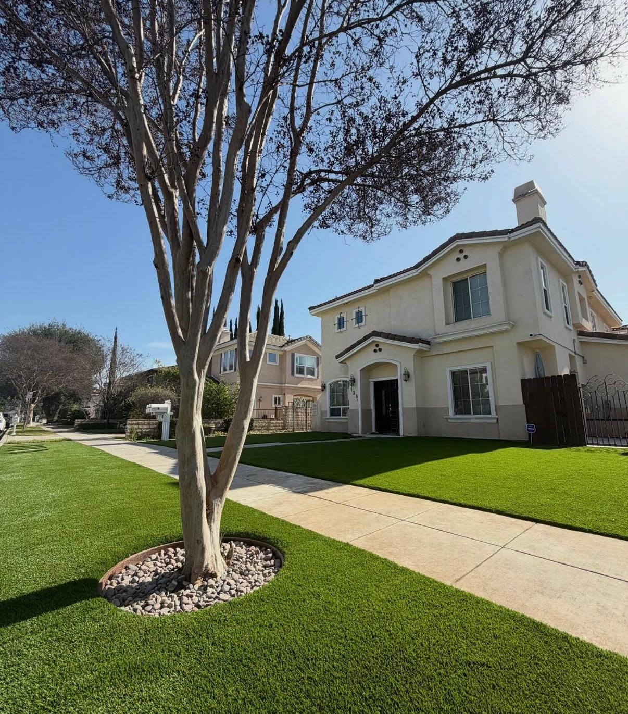

TurfArtificial Grass Installation
Pet-friendly and putting-green turf for front yards, back yards, side yards, and play areas. We remove the old lawn, install a compacted base for drainage, then seam, nail, and infill so the turf stays flat and cool underfoot.